어디로 가야 하는지부터 무엇을 눌러야 하는지까지.
건물 밖 도보 경로에서 무인발급기 앞까지 이어지는 안내로
외국인 유학생과 신입생이 혼자서도 학교 일을 끝낼 수 있게 돕습니다.
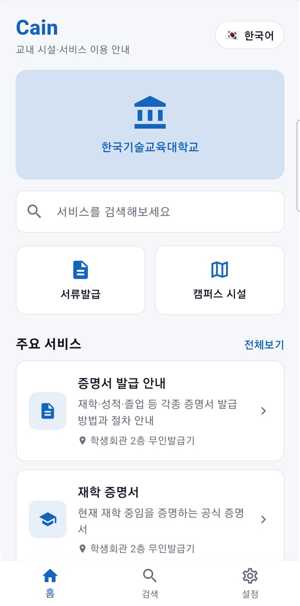
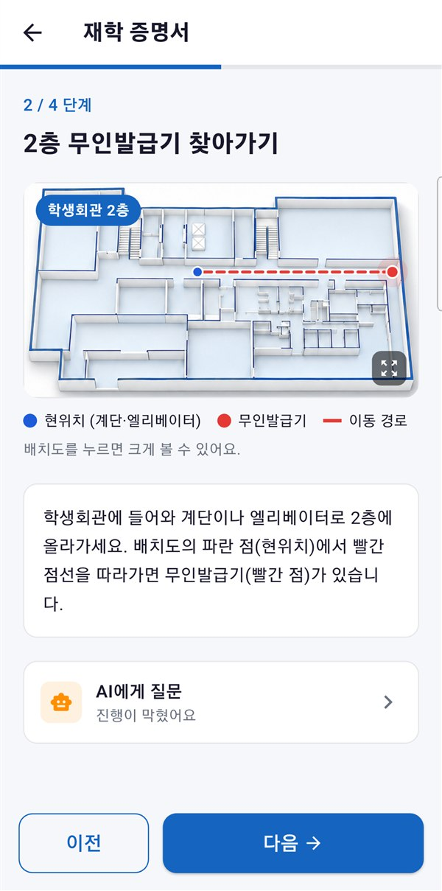
장소, 운영시간, 준비물, 이용 방법이 홈페이지·공지·게시판에 나뉘어 있어, 서류 한 장을 떼려 해도 여러 곳을 찾아다녀야 합니다.
지도 앱은 건물 입구까지만 안내합니다. '학생회관 2층 무인발급기'처럼 건물 안의 위치는 처음 온 사람이 직접 헤매며 찾아야 합니다.
발급기 앞에서 어떤 메뉴를 고를지, 무엇이 필요한지 몰라 멈춥니다. 한국어가 서툰 유학생에게는 이 모든 단계가 더 높은 벽입니다.
주요 사용자 외국인 유학생 · 교환학생 · 신입생 — 그리고 교내 시설을 처음 이용하는 모든 사람
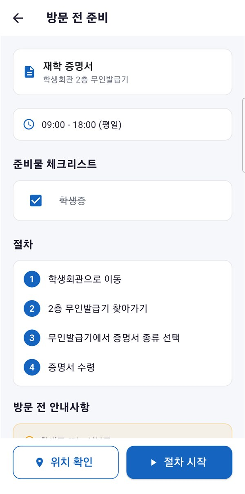
장소·운영시간·준비물과 전체 절차를 출발 전에 미리 확인합니다. 준비물은 체크리스트로 챙깁니다.
현재 위치에서 건물까지는 지도 위 도보 경로로, 건물 안에서는 층별 배치도 위 경로로 목적지까지 안내합니다.
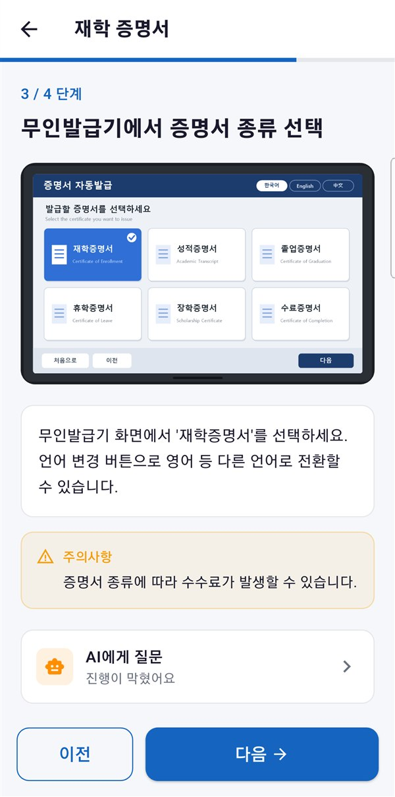
무인발급기 화면과 같은 이미지로 무엇을 눌러야 하는지 보여줍니다. 막히면 AI에게 바로 물어볼 수 있습니다.
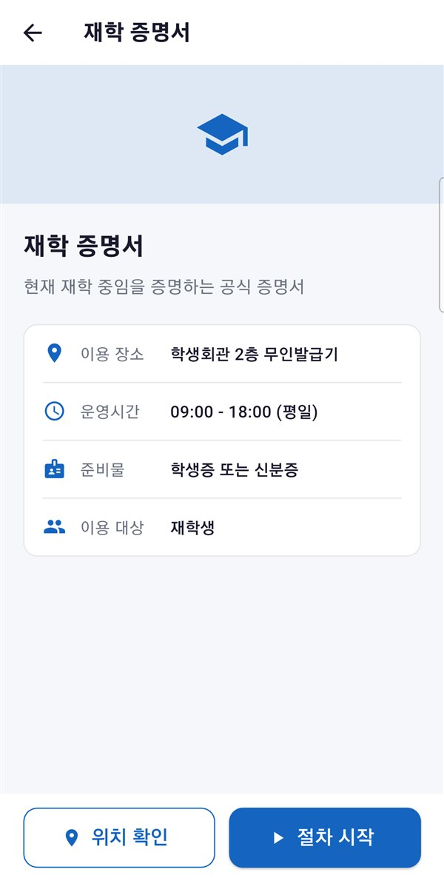
이용 장소, 운영시간, 준비물, 이용 대상을 한 화면에 모았습니다.
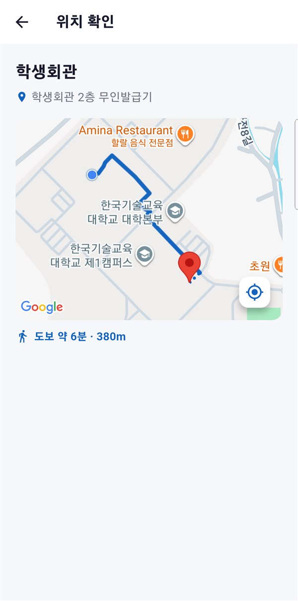
버튼 하나로 현재 위치에서 학생회관까지 도보 경로와 소요 시간을 보여줍니다.
준비물 체크리스트와 전체 4단계 절차를 미리 훑어보고 출발합니다.
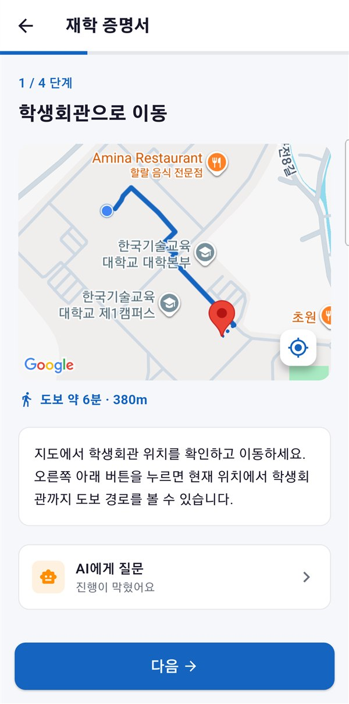
지도 위 도보 경로를 따라 건물까지
층별 배치도 위에 현위치 → 발급기 경로
발급기 화면 그대로 보며 메뉴 선택
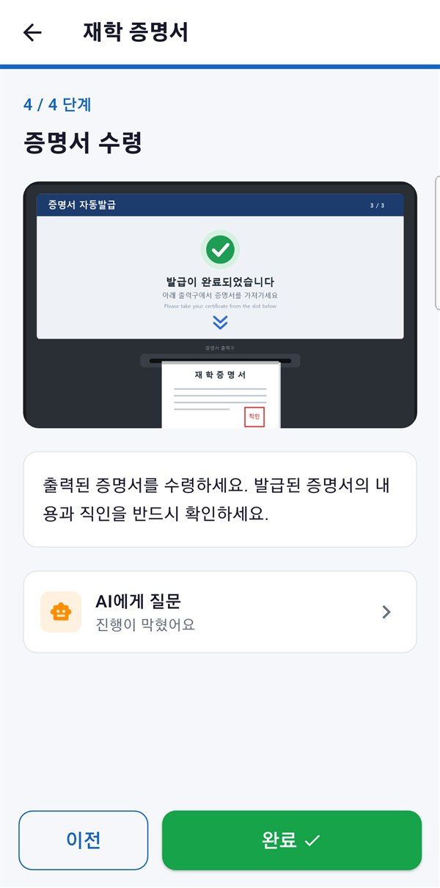
출력구 위치와 직인 확인까지 안내
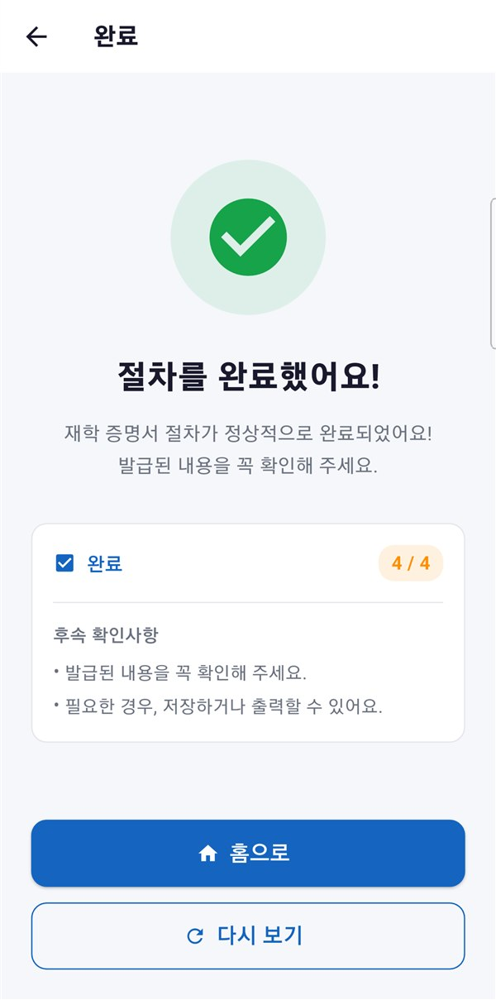
마지막으로 챙길 내용을 정리
결제 기능이 있는 학생증은 은행 분실 신고가 먼저입니다. 답이 달라지는 지점에서는 바로 답하지 않고 먼저 되묻습니다.
담당 부서, 위치, 운영시간, 준비물, 비용, 기간을 한눈에 보이게 정리하고 공식 안내 출처를 함께 표시합니다.
"새 학생증이 나올 때까지"라는 후속 질문에도 앞의 대화를 이어받아, 그 사이에 필요한 대체 방법을 안내합니다.
| 교내 정보 한곳에 | 건물 밖 도보 경로 | 건물 안 길안내 | 단계별 이용 절차 | 다국어 안내 | 학교 맞춤 상담 | |
|---|---|---|---|---|---|---|
| 학교 홈페이지 | △ | ✕ | ✕ | △ | △ | ✕ |
| 지도 앱 | ✕ | ○ | ✕ | ✕ | ○ | ✕ |
| 범용 AI 챗봇 | △ | ✕ | ✕ | △ | ○ | △ |
| Cain | ○ | ○ | ○ | ○ | ○ | ○ |
처음 실행할 때 고른 언어로 메뉴, 서비스 안내, 단계별 설명이 모두 바뀌고, 홈 화면 오른쪽 위에서 언제든 다시 바꿀 수 있습니다.
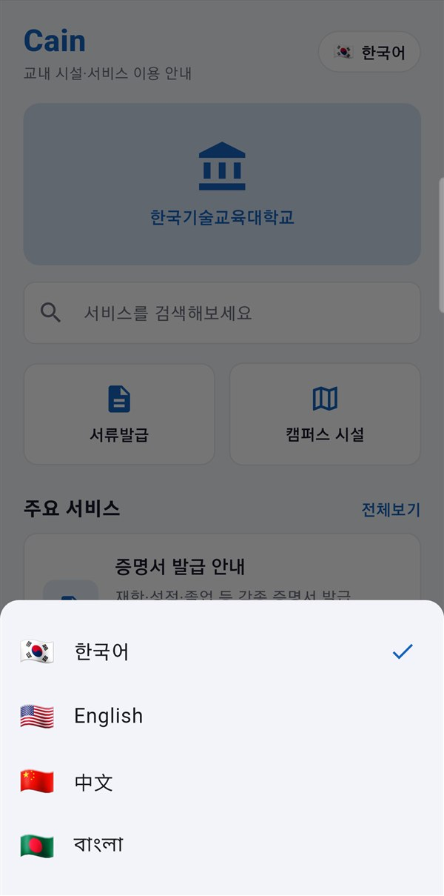
홈 화면의 언어 버튼으로 바로 변경
재학생 · 신입생
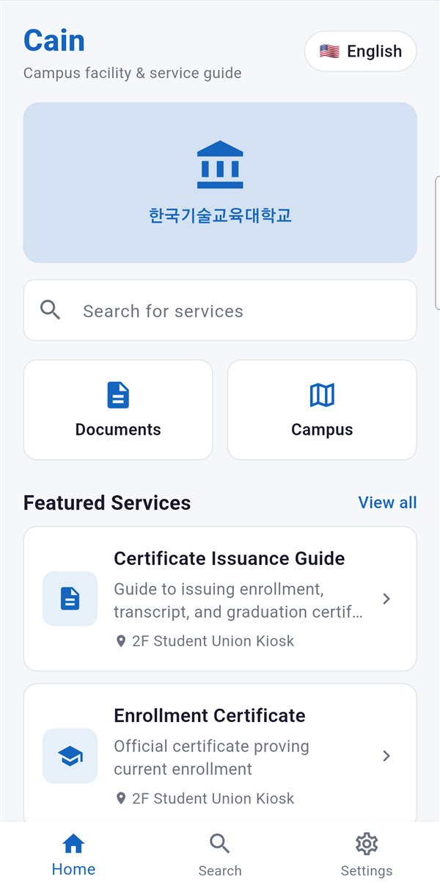
교환학생 · 영어권 유학생
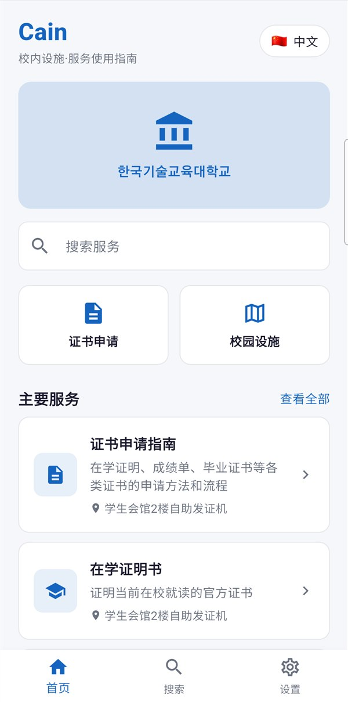
중국어권 유학생
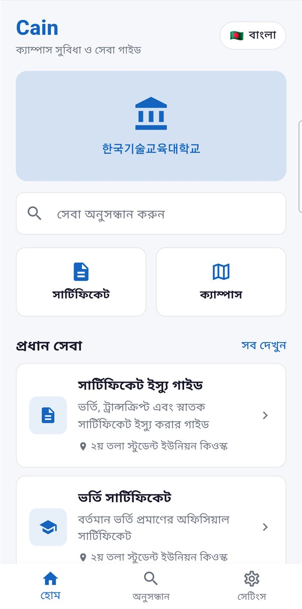
방글라데시 유학생
서비스, 단계, 건물 정보를 데이터 파일로 관리합니다. 새 안내를 추가하거나 다른 학교에 적용할 때 앱 코드를 고치지 않고 데이터만 바꾸면 됩니다.
실내 경로를 배치도 이미지 위의 비율 좌표로 표현합니다. 별도 실내 측위 장비 없이 배치도 사진과 좌표 몇 개만으로 새 건물을 추가할 수 있습니다.
AI 상담에 질문과 함께 선택 언어, 현재 보고 있는 서비스·단계 정보를 보내도록 설계해, 같은 질문이라도 상황에 맞는 답을 줄 수 있습니다.
도보 경로, AI 응답 등 외부 의존 기능을 인터페이스로 분리해 제공자를 바꿔도 화면은 그대로 동작합니다.
길을 묻고 다니지 않아도 행정 업무를 끝낼 수 있어, 낯선 환경에 적응하는 부담이 줄어듭니다.
"어디서 떼요?", "뭘 가져가요?" 같은 위치·절차 문의가 앱으로 해결됩니다.
언어 장벽을 낮춘 안내로 유학생이 머물고 싶은 학교 환경을 만듭니다.